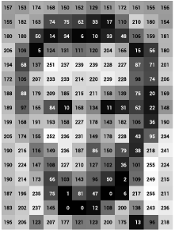

Represent
Model images, cameras, motion, and geometry with the right mathematical abstractions.
ShanghaiTech University · Fall 2026
From pixels to perception. Learn the geometry, learning systems, and practical tools that let machines understand the visual world.

Pixels → perception What do you see in this image?
Adapted from Golan Levin’s pixel data diagram in “Image Processing and Computer Vision,” openFrameworks ofBook ↗
01 / Overview
Model images, cameras, motion, and geometry with the right mathematical abstractions.
Train and diagnose neural models for classification, detection, and dense prediction.
Turn research ideas into reproducible vision pipelines using PyTorch and modern tooling.
02 / Syllabus
Scroll sideways to view slides and readings
| Lecture | Title | Slide | Reading |
|---|---|---|---|
| 1 | Camera | [slides] | TBA |
| 2 | Lighting | [slides] | TBA |
| 3 | Color | [slides] | TBA |
| 4 | Filtering | [slides] | TBA |
| 5 | Feature Detection | [slides] | TBA |
| 6 | Fitting | [slides] | TBA |
| 7 | Hough | [slides] | TBA |
| 8 | Deep Learning for Computer Vision | [slides] | TBA |
| 9 | Image Classification | [slides] | TBA |
| 10 | Segmentation | [slides] | TBA |
| 11 | Object Detection | [slides] | TBA |
| 12 | Camera Calibration | [slides] | TBA |
| 13 | Single-View Geometry | [slides] | TBA |
| 14 | Epipolar Geometry | [slides] | TBA |
| 15 | Image Stitching | [slides] | TBA |
| 16 | Stereo Vision | [slides] | TBA |
| 17 | Structure from Motion | [slides] | TBA |
03 / Course team